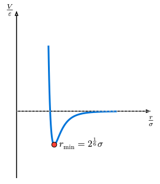

61 分子動力学シミュレーション
これまでの知識を総動員して、分子動力学法 (Molecular Dynamics, MD) のシミュレーションを構築しましょう。 MDは、原子や分子の動きをニュートンの運動方程式に従って計算し、物質の巨視的な性質（温度、圧力、相転移など）を微視的な視点から解析する強力な手法です。
61.1 レナード・ジョーンズ・ポテンシャル
希ガス（アルゴンなど）の原子間相互作用を記述する最も代表的なモデルが、レナード・ジョーンズ (Lennard-Jones, LJ) ポテンシャルです。
\[ V(r) = 4 epsilon [ (sigma/r)^12 - (sigma/r)^6 ] \]

このポテンシャルは、2つの物理的効果を組み合わせています：
- 遠距離の引力 (\(r^(-6)\)項): 分子間の「ファンデルワールス力（分散力）」を表します。
- 近距離の反発 (\(r^(-12)\)項): 電子雲の重なりによる「パウリの排他律」に由来する強い反発力を表します。
ポテンシャルが最小（最も安定）となる距離は\(r_min = 2^(1/6) sigma\)です。
61.2 初期条件：格子配置と温度
MDシミュレーションを始めるには、粒子の「初期位置」と「初期速度」を決める必要があります。
- 初期位置: 粒子が重なりすぎないよう、正方格子状などに並べるのが一般的です。
- 初期速度: 粒子を静止状態で始めると、力が釣り合って動かないか、非常に退屈なシミュレーションになります。物理的には、物質の「温度」は粒子の「熱運動（運動エネルギー）」に対応します。そのため、各粒子にランダムな初速を与えることで、系に特定の温度を導入します。
61.3 実践的な実装
この例では、位置・速度・加速度をすべて形状 (n, 2) の配列で持ちます。0番目の軸が粒子番号、1番目の軸が座標成分 (x, y) です。この順序にすると pos.row(i) が「粒子 i の位置ベクトル」になり、粒子ごとの距離計算を読みやすく書けます。
性能を強く意識する場合は、座標成分ごとの連続性を優先して (2, n) にする、あるいは x, y, vx, vy を別々の配列で持つ SoA (Structure of Arrays) 形式にする選択もあります。ここでは、まずアルゴリズムを見通しやすくするために (n, 2) を使います。
use ndarray::{Array1, Array2, Axis};
use ndarray_rand::RandomExt;
use ndarray_rand::rand_distr::Uniform;
struct MDSystem {
n: usize,
l: f64,
// Shape: (n, 2). Axis 0 is the particle index; axis 1 is (x, y).
// This makes `pos.row(i)` the position vector of particle i.
pos: Array2<f64>,
vel: Array2<f64>,
acc: Array2<f64>,
}
impl MDSystem {
fn new(n: usize, l: f64, target_temp: f64) -> Self {
let mut pos = Array2::zeros((n, 2));
let n_side = (n as f64).sqrt() as usize;
let spacing = l / n_side as f64;
for i in 0..n {
pos[[i, 0]] = (i % n_side) as f64 * spacing + spacing * 0.5;
pos[[i, 1]] = (i / n_side) as f64 * spacing + spacing * 0.5;
}
// 1. ランダムな初速を与える（-0.5 ～ 0.5 の一様分布）
let mut vel = Array2::<f64>::random((n, 2), Uniform::new(-0.5, 0.5));
// 2. 重心速度をゼロにする（系全体のドリフトを防ぐ）
let mean_vel = vel.mean_axis(Axis(0)).unwrap();
vel -= &mean_vel;
// 3. 温度（運動エネルギー）の調整
// 2次元の場合、自由度あたりのエネルギーから温度をスケーリング
let current_temp = 0.5 * vel.mapv(|v: f64| v.powi(2)).sum() / n as f64;
let scale = (target_temp / current_temp).sqrt();
vel *= scale;
Self { n, l, pos, vel, acc: Array2::zeros((n, 2)) }
}
fn get_dr(&self, i: usize, j: usize) -> Array1<f64> {
let mut dr = &self.pos.row(i) - &self.pos.row(j);
for k in 0..2 {
if dr[k] > self.l * 0.5 { dr[k] -= self.l; }
else if dr[k] < -self.l * 0.5 { dr[k] += self.l; }
}
dr
}
fn compute_forces(&mut self) -> f64 {
self.acc.fill(0.0);
let mut pot = 0.0;
for i in 0..self.n {
for j in (i + 1)..self.n {
let dr = self.get_dr(i, j);
let r2 = dr.dot(&dr);
if r2 < 9.0 { // カットオフ 3.0
let r2_inv = 1.0 / r2;
let r6_inv = r2_inv * r2_inv * r2_inv;
pot += 4.0 * (r6_inv * r6_inv - r6_inv);
let f_scalar = 24.0 * r2_inv * (2.0 * r6_inv * r6_inv - r6_inv);
for k in 0..2 {
self.acc[[i, k]] += f_scalar * dr[k];
self.acc[[j, k]] -= f_scalar * dr[k];
}
}
}
}
pot
}
fn step(&mut self, dt: f64) -> f64 {
self.pos += &(&self.vel * dt + 0.5 * &self.acc * dt * dt);
self.pos.mapv_inplace(|x| x.rem_euclid(self.l));
let old_acc = self.acc.clone();
let pot = self.compute_forces();
self.vel += &(0.5 * (&old_acc + &self.acc) * dt);
pot
}
}
fn main() {
// 16粒子、サイズ10.0の箱、温度0.5で初期化
let mut system = MDSystem::new(16, 10.0, 0.5);
let dt = 0.01;
system.compute_forces();
println!("Step, Potential, Kinetic, Total");
for i in 0..101 {
let pot = system.step(dt);
let kin = 0.5 * system.vel.mapv(|v| v.powi(2)).sum();
if i % 10 == 0 {
println!("{:>4}, {:>10.4}, {:>10.4}, {:>10.4}", i, pot, kin, pot + kin);
}
}
}
61.4 演習
この節のコードは、まず正しさを小さいテストで固定し、その後でメモリ配置や力計算を最適化する流れで発展させます。最適化の前後で同じ unit test が通るようにしておくと、性能改善によるバグを見つけやすくなります。
61.4.1 1. Unit testで物理的な性質を確認する
src/lib.rs に計算部分を分け、main.rs は初期化、時間発展、CSV出力だけを担当する形にします。少なくとも以下の関数をテスト可能にしてください。
minimum_image(dx, box_length): 周期境界条件のもとで、最短の変位を返す。pair_force(dr): 2粒子間の Lennard-Jones 力を返す。compute_forces(system): 全粒子の力とポテンシャルエネルギーを計算する。kinetic_energy(vel): 速度配列から運動エネルギーを計算する。
確認するテストの例：
minimum_image(6.0, 10.0)が-4.0になること。- 2粒子系で、粒子
iが受ける力と粒子jが受ける力が符号反転していること（作用反作用）。 r = 2^(1/6) sigma付近で Lennard-Jones 力がほぼ0になること。- 速度を既知の値にしたとき、
kinetic_energyが手計算と一致すること。
浮動小数点の比較には、絶対誤差 1e-10 や相対誤差を使います。乱数を含む初期化は unit test から切り離し、固定した位置・速度でテストします。
61.4.2 2. メモリ配置を変えて力計算を比較する
現在の実装は (n, 2) の配列を使っています。これは pos.row(i) で粒子 i の位置ベクトルを取り出せるため、アルゴリズムの説明には向いています。一方、粒子数が増えると、メモリアクセスの局所性や不要な一時配列の生成が性能に効いてきます。
最適化演習として、次の2つの実装を比較してください。
- AoSに近い実装: 現在の
(n, 2)配列を使う。 - SoA実装:
x,y,vx,vy,ax,ayを別々のVec<f64>またはArray1<f64>として持つ。
両方の実装で、同じ初期条件に対して compute_forces のポテンシャルエネルギーと各粒子の力が同じになることを unit test で確認します。最適化の評価は、正しさのテストを通した後で行います。
61.4.3 3. cargo benchで測定する
ベンチマークでは、時間発展全体ではなく、まず最も重い compute_forces だけを測ります。cargo bench と Criterion の設定は、パフォーマンス測定とプロファイリングを参照してください。
測定するときは、以下を固定します。
- 粒子数
n（例：256,1024,4096） - box size と cutoff
- 初期位置の生成方法
- 比較する実装（
(n, 2)版、SoA版）
ベンチマーク結果だけで判断せず、cargo test で物理的な不変条件が保たれていることを確認してから、実装を採用してください。
61.5 パフォーマンスと並列化
粒子数\(N\)が増えると、力計算の二重ループがボトルネックとなります（計算量\(O(N^2)\)）。 これを解決するためには、Rayonによるデータ並列化で学ぶRayonを用いた並列計算や、計算量を\(O(N)\)に抑える近接リスト法などの工夫が必要になります。
61.6 まとめ
本章では、単純な落体から多数の粒子系まで、古典力学のシミュレーション手法を学びました。 特にシンプレクティック積分の重要性と、ndarrayを用いたベクトル演算の実装方法は、物理シミュレーション全般に応用できる極めて重要なテクニックです。
61.7 参考リンク
- Molecular dynamics - Wikipedia
- Lennard-Jones potential - Wikipedia
- Periodic boundary conditions - Wikipedia
次章では、これらをさらに発展させ、連続体の力学である「流体力学」について学びます。